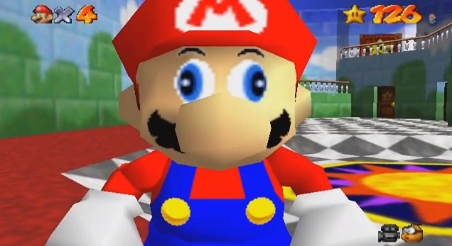

Aventura de aprendizaje
Trigonometría con Mario y SMG4
Elige una misión: primero entiende las razones trigonométricas y después demuestra lo que sabes con ejercicios que cambian en cada intento.

Misión 1
Aprender con Mario
Repasa lados, seno, coseno, tangente, elevación, depresión y Ley de Senos con ejemplos paso a paso.
Misión 2
Practicar con SMG4
Resuelve preguntas por tema o haz un simulacro de 18 retos, con respuestas y explicaciones inmediatas.